소방시설관리사 (2023-05-20 기출문제)
1과목: 방안전관리론
1. Methane 20 vol%, Butane 30 vol%, Propane 50 vol%인 혼합기체의 공기 중 폭발하한계는 약 몇 vol% 인가? (단, 공기 중 각 가스의 폭발하한계는 Methane 5.0 vol%, Butane 1.8 vol%, Propane 2.1 vol% 임)
- 1.86
- 2.25
- 2.86
- 3.29
(정답률: 81%)
2. 다음에서 설명하고 있는 현상은?
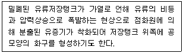
- Boil Over
- Slop Over
- UVCE(Unconfined Vapor Cloud Explosion)
- BLEVE(Boiling Liquid Expanding Vapor Explosion)
(정답률: 75%)
3. 다음 ( )에 들어갈 내용으로 옳은 것은?
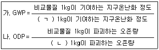
- ㄱ: CO, ㄴ: CFC-11
- ㄱ: CFC-12, ㄴ: CO
- ㄱ: CO2, ㄴ: CFC-11
- ㄱ: CFC-12, ㄴ: CO2
(정답률: 80%)
4. 연소점, 인화점 및 발화점에 관한 내용으로 옳지 않은 것은?
- 연소점, 인화점, 발화점 순으로 온도가 높다.
- 인화점은 외부에너지(점화원)에 의해 발화하기 시작되는 최저온도를 말한다.
- 발화점은 점화원 없이 스스로 발화할 수 있는 최저온도를 말한다.
- 연소점은 외부에너지(점화원)를 제거해도 연소가 지속되는 최저온도를 딛조한다.
(정답률: 82%)
5. 가연성기체의 폭발한계범위에서 위험도가 가장 높은 것은?
- 수소
- 에틸렌
- 아세틸렌
- 에테인
(정답률: 78%)
6. 아레니우스(Arrhenius)의 반응속도식에 관한 설명으로 옳지 않은 것은?
- 온도가 높을수록 반응속도는 증가한다.
- 압력이 높을수록 반응속도는 감소한다.
- 활성화에너지가 클수록 반응속도는 감소한다.
- 분자의 충돌 횟수가 많을수록 반응속도는 증가한다.
(정답률: 71%)
7. 폭발의 분류에서 기상폭발이 아닌 것은?
- 가스폭발
- 분해폭발
- 수증기폭발
- 분진폭발
(정답률: 66%)
8. 소실정도에 따른 화재분류에 관한 설명이다. ( )에 들어갈 내용으로 옳은 것은?
- 즉소
- 전소
- 부분소
- 반소
(정답률: 79%)
9. 폭발의 종류와 해당 폭발이 일어날 수 있는 물질의 연결이 옳은 것은?
- 산화폭발 - 가연성가스
- 분진폭발 - 시안화수소
- 중합폭발 - 아세틸렌
- 분해폭발 - 염화비닐
(정답률: 61%)
10. 건축물의 피난·방화구조 등의 기준에 관한 규칙상 피난안전구역의 면적 산정기준에서 문화·집회 용도에서 고정좌석을 사용하지 않는 공간의 재실자 밀도 기준으로 옳은 것은?
- 0.28
- 0.45
- 2.80
- 9.30
(정답률: 55%)
11. 가로 10m, 세로 5m, 높이 10m 인 실내공간에 저장되어 있는 발열량 10,500 kcal/kg인 가연물 1,000 kg과 발열량 7,500 kcal/kg인 가연물 2,000 kg이 완전연소 하였을 때 화재하중(kg/m2)은 약 얼마인가? (단, 목재의 단위 발열량은 4,500 kcal/kg임)
- 56.67
- 70.35
- 113.33
- 120.56
(정답률: 70%)
12. 내화건축물과 비교한 목조건축물의 화재 특성에 관한 설명으로 옳은 것을 모두 고른 것은?
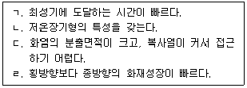
- ㄴ, ㄷ
- ㄷ, ㄹ
- ㄱ, ㄴ, ㄹ
- ㄱ, ㄷ, ㄹ
(정답률: 85%)
13. 건축물의 피난·방화구조 등의 기준에 관한 규칙상 벽의 내화구조에 관한 내용으로 옳지 않은 것은?
- 철근콘크리트조 또는 철골철근콘크리트조로서 두께가 10센티미터 이상인 것
- 철재로 보강된 콘크리트블록조·벽돌조 또는 석조로서 철재에 덮은 콘크리트블록등의 두께가 5센티미터 이상인 것
- 벽돌조로서 두께가 15센티미터 이상인 것
- 고온·고압의 증기로 양생된 경량기포 콘크리트패널 또는 경량기포 콘크리트블록조로서 두께가 10센티미터 이상인 것
(정답률: 64%)
14. 건축물의 피난·방화구조 등의 기준에 관한 규칙상 피난안전구역 설치기준에 관한 설명으로 옳은 것은?
- 피난안전구역의 내부마감재료는 난연재료로 설치할 것
- 비상용 승강기는 피난안전구역에서 승하차 할 수 있는 구조로 설치할 것
- 건축물의 내부에서 피난안전구역으로 통하는 계단은 피난계단의 구조로 설치할 것
- 피난안전구역의 높이는 l.8미터 이상일 것
(정답률: 71%)
15. 초고층 및 지하연계 복합건축물 재난관리에 관한 특별법 시행령상 피난안전구역 면적 산정 기준에 관한 설명으로 ( )에 들어갈 내용으로 옳은 것은?
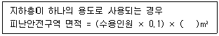
- 0.28
- 0.50
- 0.70
- 1.80
(정답률: 55%)
16. 다음에서 설명하는 화재 시 언간의 피난행동 특성으로 옳은 것은?
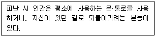
- 귀소본능
- 지광본능
- 추정본능
- 회피본능
(정답률: 86%)
17. 건축물의 피난·방화구조 등의 기준에 관한 규칙상 건축물의 바깥쪽에 설치하는 피난계단의 구조에 관한 설명으로 옳은 것을 모두 고른 것은?
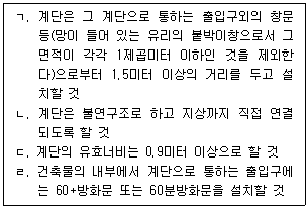
- ㄱ, ㄴ
- ㄱ, ㄹ
- ㄴ, ㄷ
- ㄷ, ㄹ
(정답률: 60%)
18. 화재실 내부에 발생한 난류화염에 벽체가 노출되었다. 화염으로부터 벽체에 전달되는 대류 열유속(W/m2)은 얼마인가? (단, 대류열전달계수는 7W/m2·℃, 난류화염의 온도는 900℃, 벽체의 온도는 30℃, 벽체면적은 2m2 임)
- 6,090
- 6,510
- 12,180
- 13,020
(정답률: 54%)
19. 고체가연물의 한 쪽 면이 가열되고 있는 조건에서 점화시간에 관한 설명으로 옳지 않은 것은?
- 얇은 가연물이 두꺼운 가연물보다 빨리 점화된다.
- 밀도가 높을수록 점화하기까지의 시간이 짧아진다.
- 가연물의 발화점이 낮을수록 점화하기까지의 시간이 짧아진다.
- 비열이 클수록 점화하기까지의 시간이 길어진다.
(정답률: 75%)
20. 화재성장속도 분류에서 약 1MW의 열량에 도달하는 시간이 300초에 해당하는 것은?
- Slow 화재
- Medium 화재
- Fast 화재
- Ultrafast 화재
(정답률: 63%)
21. 연소생성물 중 발생하는 연소가스에 관한 설명으로 옳지 않은 것은?
- 시안화수소는 울, 실크, 나일론과 같이 질소를 함유하는 물질 등이 연소할 때 발생한다.
- 일산화탄소는 가연물이 불완전 연소할 때 발생하는 것으로 독성가스이며 연소가 가능한 물질이다.
- 이산화탄소는 흡입하면 호흡이 촉진되어 화재에 의해 발생하는 독성가스나 수증기를 흡입하는 양이 늘어난다.
- 황화수소는 폴리염화비닐(PVC)이 화재로 인해 분해됐을 때 다량 발생하며, 금속에 대한 강한 부식성이 있다.
(정답률: 65%)
22. 열방출속도가 2MW로 연소 중인 화재를 진압하는데 필요한 최소 방수량(g/s)은 약 얼마인가? (단, 물의 온도는 20℃, 기화온도는 100℃, 기화열은 2,260 J/g이며, 물의 냉각효과가 열방출속도보다 크면 소화됨)
- 715.16
- 746.83
- 770.89
- 884.96
(정답률: 42%)
23. 면적 1m2의 목재표면에서 연소가 일어날 때 에너지 방출율 는 얼마인가? (단, 목재의 최대 질량연소유속
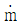
″은 720g/m2·min, 기화열 L은 4kJ/g, 유효 연소열 △Hc는 14kJ/g임)- 120kW
- 168kW
- 7.20MW
- 10.08MW
(정답률: 38%)
24. 제연설비의 예상제연구역에 관한 배출량의 기준으로 옳지 않은 것은? (단, 거실의 수직거리 2m 이하의 공간임)
- 바닥면적이 400m2 미만으로 구획된 예상제연구역에서 바닥면적 1m2 당 1m3/min 이상으로 하되, 예상제연구역에 대한 최소 배출량은 1,000 m3/h 이상으로 할 것
- 바닥면적이 400m2 이상인 거실의 예상제연구역에서 예상제연구역이 직경 40m인 원의 범위 안에 있을 경우 배출량은 40,000 m3/h 이상으로 할 것
- 바닥면적이 400m2 이상인 거실의 예상제연구역에서 예상제연구역이 직경 40m인 원의 범위를 초과할 경우 배출량은 45,000 m3/h 이상으로 할 것
- 예상제연구역이 통로인 경우의 배출량은 45,000 m3/h 이상으로 할 것
(정답률: 65%)
25. 구획실 화재 시 화재실의 중성대에 관한 설명으로 옳은 것은?
- 중성대는 화재실 내부의 실온이 낮아질수록 낮아지고, 실온이 높아질수록 높아진다.
- 화재실의 중성대 상부 압력은 실외압력보다 낮고 하부의 압력은 실외압력보다 높다.
- 중성대에서 연기의 흐름이 가장 활발하다.
- 화재실의 상부에 큰 개구부가 있다면 중성대는 높아진다.
(정답률: 63%)
2과목: 소방수리학·약제화학 및 소방전
26. 다음 중 유체에 해당하는 것을 모두 고른 것은?
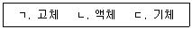
- ㄴ
- ㄱ, ㄷ
- ㄴ, ㄷ
- ㄱ, ㄴ, ㄷ
(정답률: 72%)
27. 어떤 액체의 동점성계수가 0.002m2/s, 비중이 1.1일 때 이 액체의 점성계수(N·s/m2)는 얼마인가? (단, 중력가속도는 9.8m/s2, 물의 단위중량은 9.8kN/m3이다.)
- 2.2
- 6.8
- 10.1
- 15.7
(정답률: 60%)
28. 관수로 흐름에서 미소손실에 해당하지 않는 것은?
- 단면 급확대손실
- 단면 급축소손실
- 밸브손실
- 마찰손실
(정답률: 67%)
29. 이상유체 흐름에서 베르누이 방정식의 전수두(total head)를 구성하는 수두가 아닌 것은?
- 위치수두
- 마찰손실수두
- 압력수두
- 속도수두
(정답률: 66%)
30. 내경이 0.5m인 주철관에서 물이 400m를 흐르는 동안 발생한 손질수두가 10m 이다. 이때 유량(m3/s)은 약 얼마인가? (단, Manning의 평균유속공식을 사용하며, 주철관의 조도계수는 0.015, π는 3.14이다.)
- 0.517
- 2.696
- 4.529
- 6.315
(정답률: 32%)
31. 내경이 각각 30cm와 20cm인 관이 서로 연결되어 었다. 내경 30cm 관에서의 유속이 1.5 m/s 일 때 20cm 관에서의 유속(m/s)은 얼마인가? (단, 정상류 흐름이며, π는 3.14 이다.)
- 0.951
- 3.375
- 5.691
- 8.284
(정답률: 66%)
32. 다음에서 설명하는 것은?
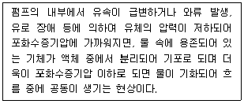
- 모세관 현상
- 사이폰
- 도수현상(hydraulic jump)
- 캐비테이션
(정답률: 77%)
33. Darcy-Weisbach의 마찰손실공식에 관한 설명 중 옳지 않은 것은?
- 마찰손실수두는 관경에 반비례한다.
- 마찰손실수두는 마찰손실계수에 비례한다.
- 마찰손실수두는 관의 길이에 비례한다.
- 마찰손실수두는 유속의 제곱에 반비례한다.
(정답률: 71%)
34. 레이놀즈(Reynolds) 수로 알 수 있는 유체의 흐름은?
- 층류, 난류, 천이류
- 사류, 상류, 한계류
- 층류, 난류, 한계류
- 사류, 상류, 천이류
(정답률: 65%)
35. 소화약제에 관한 설명으로 옳은 것을 모두 고른 것은?
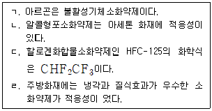
- ㄱ, ㄴ
- ㄷ, ㄹ
- ㄱ, ㄴ, ㄷ
- ㄱ, ㄴ, ㄷ, ㄹ
(정답률: 64%)
36. 할로겐화합물 및 불활성기체소화설비의 화재안전성능기준상 할로겐화합물 및 불활성 기체소화약제의 저장용기에 관한 내용이다. ( )에 들어갈 내용으로 옳은 것은?
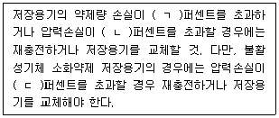
- ㄱ: 5, ㄴ: 5, ㄷ: 5
- ㄱ: 5, ㄴ: 10, ㄷ: 5
- ㄱ: 10, ㄴ: 10, ㄷ: 15
- ㄱ: 10, ㄴ: 15, ㄷ: 10
(정답률: 66%)
37. 이산화탄소소화설비의 화재안전기술기준상 이산화탄소소화약제 소요량의 방출기준에 관한 내용이다. ( )에 들어갈 내용으로 옳은 것은?
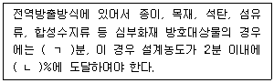
- ㄱ: 5, ㄴ: 30
- ㄱ: 5, ㄴ: 50
- ㄱ: 7, ㄴ: 30
- ㄱ: 7, ㄴ: 50
(정답률: 69%)
38. 소화약제원액 12L를 사용하여 3%의 수성막포소화약제 수용액을 만들었다. 이 수용액을 모두 사용하여 발생시킨 포의 총 부피가 4m3 일 때 포의 팽창비는 얼마인가?
- 5
- 8
- 10
- 14
(정답률: 66%)
39. 소화약제의 형식승인 및 제품검사의 기술기준상 포소화약제에 관한 내용으로 옳지 않은 것은? (단, 측정값은 기술기준의 시험방법에 따라 측정하며, 오차범위는 고려하지 않는다.)
- 유동점은 사용 하한온도보다 2.5℃ 이하이어야 한다.
- 수성막포소화약제의 수소이온농도의 범위는 6.0 이상 8.5 이하이어야 한다.
- 알콜형포소화약제의 비중의 범위는 0.90 이상 1.20 이하이어야 한다.
- 고발포용포소화약제는 거품의 팽창율은 500배 이상이어야 하며, 발포전 포수용액 용량의 25%인 포수용액이 거품으로부터 환원되는데 필요한 시간이 1분 이하이어야 한다.
(정답률: 45%)
40. 할론소화약제의 특징에 관한 설명으로 옳은 것은?
- 할론 1211의 화학식은 CF3ClBr이다.
- 할론 2402는 에테인(ethane)의 유도체이다.
- 오존파괴지수는 할론 1211이 할론 1301보다 크다.
- 할론 1301은 상온과 상압에서 액체이며, 주된 소화효과는 억제소화이다.
(정답률: 53%)
41. 소화약제인 물에 관한 설명으로 옳지 않은 것은? (단, 물의 비열은 lcal/g·℃이다.)
- 물의 용융잠열은 약 79.7 cal/g 이다.
- 물은 극성분자로 분자 간에는 수소결합을 한다.
- 1기압에서 20℃의 물 1g을 100℃의 수증기로 만들기 위해서는 약 619.6cal가 필요하다.
- 물의 임계온도는 약 374℃로 임계온도 이상에서는 압력을 조금만 가해도 쉽게 액화된다.
(정답률: 63%)
42. 분말소화약제에 관한 설명으로 옳은 것은?
- 제1종 분말의 주성분은 KHCO3 이다.
- 차고 또는 주차장에 설치하는 분말소화설비의 소화약제는 제3종 분말을 사용한다.
- 칼륨의 중탄산염이 주성분인 소화약제는 황색, 인산염이 주성분인 소화약제는 담홍색으로 각각 착색하여야 한다.
- 분말상태의 소화약제는 굳거나 덩어리지거나 변질 등 그 밖의 이상이 생기지 아니하여야 하며 페네트로메타(penetrometer)시험기로 시험한 경우 10mm 이하 침투되어야 한다.
(정답률: 63%)
43. 다음 회로에서 전류 I(A)는 얼마인가?
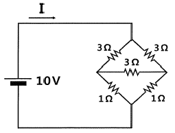
- 3
- 4
- 5
- 6
(정답률: 53%)
44. 완전 도체에 관한 설명으로 옳지 않은 것은?
- 전하는 도체 내부에 균일하게 분포한다.
- 도체 내부의 전기장의 세기는 0 이다.
- 도체 표면은 등전위면이고 도체 내부의 전위는 표면 전위와 같다.
- 도체 표면에서 전기장의 방향은 도체 표면에 항상 수직이다.
(정답률: 50%)
45. 언덕터의 자기 인덕턴스(self inductance) 에 관한 설명으로 옳지 않은 것은?
- 코일 안에 삽입된 절연물의 투자율에 비례한다.
- 동일한 인덕턴스를 갖는 인덕터 2개를 직렬 연결하면 합성 인덕턴스는 2배가 된다.
- 코일이 전하를 축적할 수 있는 능력의 정도를 나타내는 비례상수이다.
- 인덕터에 흐르는 전류가 일정하다면 인덕터에 저장된 에너지는 인덕턴스에 비례한다.
(정답률: 34%)
46. 진공 중에서 2m 떨어져 평행하게 놓여 있는 무한히 긴 두 도체에 같은 방향으로 직류 전류가 각각 lA 흐르고 있다. 이때 단위 길이 당 작용하는 힘의 방향과 크기(N/m)는? (단, μ0는 진공에서의 투자율이다.)
- 인력,

- 척력,

- 인력,

- 척력,

(정답률: 45%)
47. 다음 회로의 부하 RL에서 소비되는 평균 전력이 최대가 될 때 RL(Ω)은 얼마인가? (단, Zs = 4+j3(Ω)이다.)
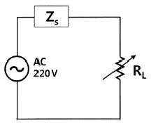
- 3
- 4
- 5
- 6
(정답률: 58%)
48. 다음 회로에서 충분한 시간이 지난 다음 t=0 에서 스위치가 열린다면 t≥0에서 출력전압 Vo(t)(V)는?
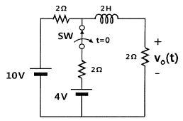
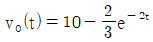
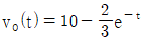
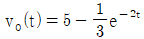
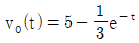
(정답률: 34%)
49. 다음 회로와 같은 T형 회로의 어드미턴스 파라미터(S) 중 옳지 않은 것은?
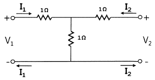
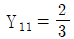
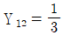
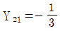
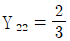
(정답률: 33%)
50. 이상적인 연산 증폭기(ideal operational amplifier)가 포함된 다음 회로에서 출력전압 Vo(V)는 얼마인가?
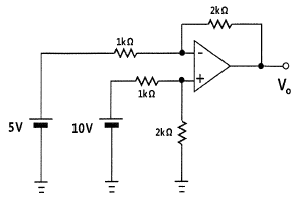
- 2.5
- 5.0
- 10.0
- 15.0
(정답률: 32%)
3과목: 소방관련법령
51. 소방기본법령상 소방기술민원센터의 설치·운영에 관한 내용으로 옳지 않은 것온?
- 소방청장 또는 소방본부장은 소방시설, 소방공사 및 위험물 안전관리 등과 관련된 법령해석 등의 민원을 종합적으로 접수하여 처리할 수 있는 소방기술민원센터를 설치·운영할 수 있다.
- 소방기술민원센터는 센터장을 포함하여 30명 이내로 구성한다.
- 소방기술민원센터의 설치·운영 등에 필요한 사항은 대통령령으로 정한다.
- 소방기술민원과 관련된 현장 확인 및 처리는 소방기술민원센터의 업무에 해당한다.
(정답률: 53%)
52. 소방기본법령상 소방대장이 정한 소방활동구역에 출입이 제한될 수 있는 자는? (단, 소방대장이 소방활동을 위하여 출입을 허가한 사람은 고려하지 않음)
- 소방활동구역 안에 있는 소방대상물의 소유자 · 관리자 또는 점유자
- 의사 · 간호사 그 밖의 구조 · 구급업무에 종사하는 사람
- 화재보험업무에 종사하는 사람
- 취재인력 등 보도업무에 종사하는 사람
(정답률: 79%)
53. 소방기본법령상 소방용수시설의 설치 및 관리 등에 관한 내용으로 옳은 것은?
- 소방본부장 또는 소방서장은 소방활동에 필요한 소방용수시설을 설치하고 유지 · 관리하여야 한다.
- 소방본부장 또는 소방서장은 소방자동차의 진입이 곤란한 지역 등 화재발생 시에 초기대응이 필요한 지역으로서 대통령령으로 정하는 지역에 비상소화장치를 설치하고 유지·관리할 수 있다.
- 소방본부장 또는 소방서장은 원활한 소방활동을 위하여 소방용수시설에 대한 조사를 연 1회 실시하여야 한다.
- 비상소화장치는 비상소화장치함, 소화전, 소방호스, 관창을 포함하여 구성하여야 한다.
(정답률: 64%)
54. 소방기본법령상 500만원 이하의 과태료 처분을 받을 수 있는 자는?
- 화재 또는 구조 · 구급이 필요한 상황을 거짓으로 알린 자
- 정당한 사유 없이 소방대의 생활안전활동을 방해한 자
- 정당한 사유 없이 소방대가 현장에 도착할 때까지 사람을 구출하는 조치를 하지 아니한 관계인
- 소방대장의 피난 명령을 위반한 자
(정답률: 53%)
55. 소방시설공사업법령상 용어의 정의에 관한 내용으로 옳지 않은 것은?
- “소방시설설계업”이란 소방시설공사에 기본이 되는 공사계획, 설계도면, 설계 설명서, 기술계산서 및 이와 관련된 서류를 작성하는 영업을 말한다.
- “소방시설업자”란 소방시설업을 경영하기 위하여 소방시설업을 등록한 자를 말한다.
- “발주자”란 소방시설의 설계, 시공, 감리 및 방염을 소방시설업자에게 도급하는 자를 말한다. 다만, 수급인으로서 도급받은 공사를 하도급하는 자는 제외한다.
- “감리원”이란 소방시설공사업자에 소속된 소방기술자로서 해당 소방시설공사를 감리하는 사람을 말한다.
(정답률: 59%)
56. 소방시설공사업법령상 소방본부장이나 소방서장이 완공검사를 위해 현장확인을 할 수 있는 특정소방대상물로 옳지 않은 것은?
- 스프링클러설비가 설치되는 특정소방대상물
- 가연성가스를 제조·저장 또는 취급하는 시설 중 지상에 노출된 가연성가스탱크의 저장용량 합계가 1백톤 이상인 시설
- 연면적 1만제곱미터 이상이거나 11층 이상인 특정소방대상물(아파트는 제외)
- 「다중이용업소의 안전관리에 관한 특별법」에 따른 다중이용업소
(정답률: 60%)
57. 소방시설공사업법령상 일반 공사감리 대상 감라원의 세부 배치 기준이다. ( )에 들어갈 내용은?
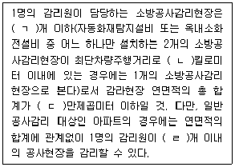
- ㄱ: 3, ㄴ: 30, ㄷ: 20, ㄹ: 5
- ㄱ: 3, ㄴ: 50, ㄷ: 20, ㄹ: 3
- ㄱ: 5, ㄴ: 30, ㄷ: 10, ㄹ: 5
- ㄱ: 5, ㄴ: 50, ㄷ: 10, ㄹ: 5
(정답률: 60%)
58. 화재의 예방 및 안전관리에 관한 법령상 시·도지사가 화재예방강화지구로 지정하여 관리할 수 있는 지역이 아닌 것은? (단, 소방관서장이 화재예방강화지구로 지정할 필요가 있다고 인정하는 지역은 고려하지 않음)
- 시장지역
- 상업지역
- 석유화학제품을 생산하는 공장이 있는 지역
- 노후·불량건축물이 밀집한 지역
(정답률: 66%)
59. 화재의 예방 및 안전관리에 관한 법령상 소방서장이 소방안전관리대상물 중 불특정다수인이 이용하는 특정소방대상물의 근무자등에게 불시에 소방훈련과 교육을 실시할 수 있는 대상이 아닌 것은? (단, 소방본부장 또는 소방서장이 소방훈련·교육이 필요하다고 인정하는 특정소방대상물은 고려하지 않음)
- 위락시설
- 의료시설
- 교육연구시설
- 노유자 시설
(정답률: 52%)
60. 화재의 예방 및 안전관리에 관한 법령상 화재안전영향평가섬의회 구성·운영사항으로 옳지 않은 것은?
- 소방청장은 화재안전과 관련된 분야의 학식과 경험이 풍부한 전문가로서 소방기술사를 위원으로 위촉할 수 있다.
- 위촉위원의 임기는 2년으로 하며 두 차례 연임할 수 있다.
- 위원장이 부득이한 사유로 직무를 수행할 수 없을 때에는 위원장이 지명한 위원이 그 직무를 대행한다.
- 위원장 1명을 포함한 12명 이내의 위원으로 구성한다.
(정답률: 62%)
61. 화재의 예방 및 안전관리에 관한 법령상 화재안전조사 통지를 받은 관계인은 소방관서장에게 화재안전조사 연기를 신청할 수 있다. 연기신청 사유에 해당하는 것을 모두 고른 것은?
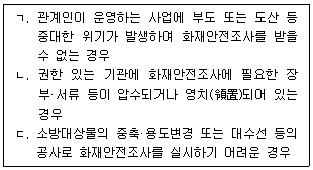
- ㄱ
- ㄴ
- ㄴ, ㄷ
- ㄱ, ㄴ, ㄷ
(정답률: 52%)
62. 소방시절 설치 및 관리에 관한 법령상 특정소방대상물의 노유자 시설에 해당하지 않는 것은?
- 장애인 의료재활시설
- 정신요양시설
- 학교의 병설유치원
- 정신재활시설(생산품판매시설은 제외)
(정답률: 50%)
63. 소방시설 설치 및 관리에 관한 법령상 내진설계를 하여야 하는 소방시설이 아닌 것은?
- 옥내소화전설비
- 강화액소화설비
- 연결송수관설비
- 포소화설비
(정답률: 63%)
64. 소방시설 설치 및 관리에 관한 법령상 지하가 중 길이가 750m인 터널에 설치해야 하는 소방시설은?
- 옥외소화전설비
- 자동화재탐지설비
- 무선통신보조설비
- 연결살수설비
(정답률: 62%)
65. 소방시설 설치 및 관리에 관한 법령상 자동소화장치 종류가 아닌 것은?
- 가스자동소화장치
- 액체에어로졸자동소화장치
- 주거용 주방자동소화장치
- 분말자동소화장치
(정답률: 71%)
66. 소방시설 설치 및 관리에 관한 법령상 특정소방대상물에 설치해야 하는 소방시설 가운데 기능과 성능이 유사한 소방시설의 설치를 유효범위에서 면제할 수 있는 경우를 모두 고른 것은?
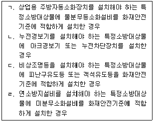
- ㄹ
- ㄱ, ㄴ
- ㄴ, ㄷ
- ㄴ, ㄷ, ㄹ
(정답률: 43%)
67. 소방시설 설치 및 관리에 관한 법령상 관계 공무원이 출입·검사 업무를 수행하면서 알게 된 비밀을 다른 사람에게 누설할 경우에 별칙은?
- 100만원 이하 벌금
- 300만원 이하 벌금
- 500만원 이하 벌금
- 1년 이하의 징역 또는 1천만원 이하의 벌금
(정답률: 54%)
68. 위험물안전관리법령상 과징금처분에 관한 조문이다. ( )에 들어갈 내용은?
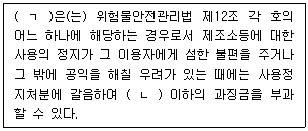
- ㄱ: 소방청장, ㄴ: 1억원
- ㄱ: 소방청장, ㄴ: 2억원
- ㄱ: 시·도지사, ㄴ: 1억원
- ㄱ: 시·도지사, ㄴ: 2억원
(정답률: 56%)
69. 위험물안전관리법령상 제3류 위험물의 지정수량 기준으로 옳은 것은?
- 알킬리튬 - 20 킬로그램
- 황린 - 50 킬로그램
- 금속의 수소화물 - 300 킬로그램
- 칼슘 또는 알루미늄의 탄화물 - 500킬로그램
(정답률: 67%)
70. 위험물안전관리법령상 소화난이도등급 Ⅰ에 해당하는 제조소등이 아닌 것은?
- 옥내탱크저장소로 액표면적이 30m2 이상인 것(제6류 위험물을 저장하는 것 및 고인화점위험물만을 100℃ 미만의 온도에서 저장하는 것은 제외)
- 암반탱크저장소로 고체위험물만을 저장하는 것으로서 지정수량의 100배 이상인 것
- 옥내저장소로 처마높이가 6m 이상인 단층건물의 것
- 이송취급소
(정답률: 46%)
71. 위험물안전관리법령상 인화성액체위험물(이황화탄소 제외) 옥외탱크저장소의 방유제에 관한 사항이다. ( )에 들어갈 내용은?
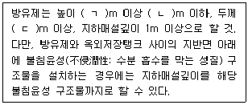
- ㄱ: 0.3, ㄴ: 2, ㄷ: 0.1
- ㄱ: 0.3, ㄴ: 2, ㄷ: 0.2
- ㄱ: 0.5, ㄴ: 3, ㄷ: 0.1
- ㄱ: 0.5, ㄴ: 3, ㄷ: 0.2
(정답률: 62%)
72. 다중이용업소의 안전관리에 관한 특별법령상 피난안내도에 대한 기준으로 옳은 것은?
- 피난안내도의 크기는 A4(210mm × 297mm) 이상의 크기로 할 것
- 피난안내도의 동선은 주 출입구에서 피난층까지로 할 것
- 피난안내도에 사용하는 언어는 한글 및 2개 이상의 외국어를 사용하여 작성할 것
- 피난안내도는 소화기, 옥내소화전 등 소방시설의 위치 및 사용방법을 포함할 것
(정답률: 62%)
73. 다중이용업소의 안전관리에 관한 특별법령상 안전관리기본계획에 대한 내용으로 옳지 않은 것은?
- 안전관리기본계획에는 다중이용업소의 화재배상책임보험 가입관리전산망의 구축·운영이 포함되어야 한다.
- 소방청장은 매년 연도별 안전관리계획을 전년도 10월 31일까지 수립해야 한다.
- 소방청장은 안전관리기본계획을 수립하면 국무총리에게 보고하고 관계 중앙행정기관의 장과 시·도지사에게 통보한 후 이를 공고해야 한다.
- 소방청장은 안전관리기본계획을 수립한 경우에는 이를 관보에 공고한다.
(정답률: 54%)
74. 다중이용업소의 안전관리에 관한 특별법령상 안전관리우수업소에 대한 내용으로 옳은 것은?
- 안전관리우수업소 표지의 규격은 가로 450밀리미터×세로 300밀리미터이다.
- 안전관리우수업소 인정 예정공고의 내용에 이의가 있는 사람은 인정 예정공고일부터 30일 이내에 소방본부장이나 소방서장에게 전자우편이나 서면으로 이의신청을 할 수 있다.
- 안전관리우수업소의 요건은 공표일 기준으로 최근 2년 동안 소방·건축·전기 및 가스 관련 법령 위반 사실이 없어야 한다.
- 소방본부장이나 소방서장은 안전관리우수업소에 대하여 소방안전교육 및 화재위험평가를 면제할 수 있다.
(정답률: 33%)
75. 다중이용업소의 안전관리에 관한 특별법령상 안전시설등의 설치·유지 기준으로 옳지 않은 것은? (단, 소방청장의 고시는 고려하지 않음)
- 영업장 층별로 가로 50 센티미터 이상, 세로 50센티미터 이상 열리는 창문을 1개 이상 설치할 것
- 영업장 내부 피난통로 또는 복도에 바깥 공기와 접하는 부분에 창문을 설치할 것(구획된 실에 설치하는 것은 제외)
- 보일러실과 영업장 사이의 출입문은 방화문으로 설치하고, 개구부에는 방화범퍼(화재 시 연기 등을 차단하는 장치)를 설치할 것
- 구획된 실부터 주된 출입구 또는 비상구까지의 내부 피난통로의 구조는 네 번 이상 구부러지는 형태로 설치하지 말 것
(정답률: 67%)
4과목: 위험물의 성상 및 시설기준
76. 제1류 위험물인 산화성 고체에 관한 설명으로 옳은 것은?
- 가연성 유기화합물과 혼합 시 연소 위험성이 증가한다.
- 무기과산화물 관련 대형화재인 경우 질식소화는 효과가 없으며 다량의 물을 사용하여 소화하는 것이 좋다.
- 제6류 위험물인 산화성 액체와 혼합하면 대부분 산화성이 감소한다.
- 물에 녹는 것이 많으며 수용액 상태에서는 산화성이 없어지고 환원제로 작용한다.
(정답률: 65%)
77. 다음 위험물들의 지정수량을 모두 합한 값(kg)은?
- 310
- 450
- 520
- 630
(정답률: 63%)
78. 제2류 위험물인 Mg에 관한 설명으로 옳지 않은 것은?
- 상온에서는 비교적 안정하지만 뜨거운 물이나 과열 수증기와 접촉하면 격렬하게 H2를 발생한다.
- 황산과 반응하여 H2를 발생한다.
- Mg분말 화재 발생 시 이산화탄소 소화약제를 사용한다.
- Br2와 반응하여 금속 할로겐 화합물을 만든다.
(정답률: 71%)
79. 황린(P4)과 황화린(P2S5)에 관한 설명으로 옳지 않은 것은?
- 황린은 공기 중에서 연소 시 유해가스인 백색의 P2O5가 발생되나 황화린은 연소 시 P2O5가 발생되지 않는다.
- 황린은 황화린보다 지정수량이 더 적다.
- 황린은 수산화칼륨 용액과 반응하여 유해한 PH3를 발생한다.
- 황화린은 물과 접촉 시 유해성, 가연성의 H2S를 발생시키므로 화재소화 시 CO2 등을 이용한 질식소화를 한다.
(정답률: 56%)
80. 물과 반응하여 수소를 발생시킬 수 있는 물질은?
- K2O2
- Li
- 적린(P)
- AlP
(정답률: 74%)
81. C6H6 2몰을 공기 중에서 완전히 연소시킬 때 발생되는 이산화탄소의 양(g)은? (단, C의 원자량은 12, O의 원자량은 16, H의 원자량은 1로 한다.)
- 66
- 132
- 264
- 528
(정답률: 57%)
82. 제4류 위험물의 지정수량 크기를 작은 것부터 큰 것까지의 순서로 옳은 것은?
- 경유 ＜ 아세트산 ＜ 이소프로필알코올 ＜ 에틸렌글리콜
- 이소프로필알코올 ＜ 경유 ＜ 아세트산 ＜ 에틸렌글리콜
- 이소프로필알코올 ＜ 에틸렌글리콜 ＜ 경유 ＜ 아세트산
- 경유 ＜ 이소프로필알코올 ＜ 에틸렌글리콜 ＜ 아세트산
(정답률: 59%)
83. 제4류 위험물에 관한 설명으로 옳지 않은 것은?
- 벤젠 증기는 공기보다 무거워서 낮은 곳에 체류하므로, 점화원에 의해 불이 일시에 번질 위험이 있다.
- 휘발유는 전기가 잘 통하므로 인화되기 쉽다.
- 시안화수소 기체는 공기보다 약간 가벼우며 맹독성 물질이다.
- 이황화탄소를 물을 채운 수조탱크 중에 저장하면 가연성 증기의 발생이 억제되어 안전하다.
(정답률: 65%)
84. 제6류 위험물인 과염소산의 성질로 옳지 않은 것은?
- 무색, 무취의 조연성 무기화합물이다.
- 철, 아연과 격렬히 반응하여 산화물을 만든다.
- 물과 접촉하면 발열하며 고체수화물을 만든다.
- 염소산 중 아염소산 보다 약한 산이다.
(정답률: 67%)
85. 과산화칼륨과 아세트산이 반응하여 발생하는 제6류 위험물의 분해 시 생성되는 물질로 옳은 것은?
- KOH, O2
- H2, CO2
- C2H2, CO2
- H2O, O2
(정답률: 52%)
86. 제5류 위험물인 니트로글리세린에 관한 설명으로 옳지 않은 것은?
- 동결하면 체적이 수축한다.
- 다이너마이트의 원료로 사용된다.
- 충격에 둔감하기 때문에 액체 상태로 운반한다.
- 질산과 황산의 혼산 중에 글리세린을 반응시켜 제조한다.
(정답률: 72%)
87. 위험물안전관리법령상 제6류 위험물은?
- H3PO4
- HCl
- HClO4
- H2SO4
(정답률: 70%)
88. 위험물안전관리법령상 액체위험물을 취급하는 옥외설비의 바닥에 관한 기준으로 옳지 않은 것은?
- 바닥의 둘레에 높이 0.15m 이상의 턱을 설치한다.
- 바닥은 턱이 있는 쪽이 높게 경사지게 한다.
- 바닥의 최저부에 집유설비를 한다.
- 바닥은 콘크리트 등 위험물이 스며들지 않는 재료로 한다.
(정답률: 66%)
89. 위험물안전관리법령상 위험물을 취급하는 건축물에 설치하는 환기설비의 설치기준으로 옳은 것을 모두 고른 것은? (단, 배출설비는 설치되어 있지 않다.)
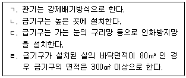
- ㄱ, ㄷ
- ㄴ, ㄹ
- ㄷ, ㄹ
- ㄴ, ㄷ, ㄹ
(정답률: 58%)
90. 제5류 위험물 중 니트로화합물에 속하는 것은?
- 피크린산
- 니트로셀룰로오스
- 니트로글리콜
- 황산히드라진
(정답률: 63%)
91. 위험물안전관리법령상 위험물을 취급하는 건축물의 지붕(작업공정상 제조기계시설등이 2층 이상에 연결되어 설치된 경우에는 최상층의 지붕을 말한다)을 내화구조로 할 수 있는 건축물로 옳은 것은?
- 제4석유류를 취급하는 건축물
- 질산염류를 취급하는 건축물
- 알킬알루미늄을 취급하는 건축물
- 히드록실아민을 취급하는 건축물
(정답률: 61%)
92. 위험물안전관리법령상 위험물제조소에 설치한 소화설비의 용량과 능력단위의 연결로 옳지 않은 것은?
- 마른 모래(삽 1개 포함) : 50L - 0.5
- 팽창진주암(삽 1개 포함): 160L - 1.0
- 소화전용물통: 8L - 0.3
- 수조(소화전용물통 3개 포함): 80L - 2.5
(정답률: 64%)
93. 위험물안전관리법령상 제3석유류를 취급하는 설비가 집중되어 있는 위험물 취급장소의 살수기준면적이 300m2인 경우 스프링클러설비가 소화 적응성이 있기 위한 최소방사량(L/분)으로 옳은 것은? (단, 위험물의 취급을 주된 작업으로 한다.)
- 2,940
- 3,540
- 4,650
- 4,890
(정답률: 38%)
94. 위험물 제조소등의 옥외에서 액체위험물을 취급하는 설비의 집유설비에 유분리장치를 설치하지 않아도 되는 위험물을 모두 고른 것은?
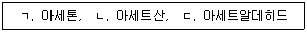
- ㄱ
- ㄴ
- ㄴ, ㄷ
- ㄱ, ㄴ, ㄷ
(정답률: 52%)
95. 제조소등에서 저장·취급하는 위험물 유별 주의사항을 표시한 게시판으로 옳게 연결된 것은?
- 제4류, 제5류 - 화기엄금 - 적색바탕, 백색문자
- 제2류 - 화기주의 - 적색바탕, 황색문자
- 제3류 - 물기주의 - 청색바탕, 백색문자
- 제1류, 제6류 - 물기엄금 - 백색바탕, 적색문자
(정답률: 63%)
96. 이동탱크저장소 시설기준으로 옳지 않은 것은?
- 옥내에 있는 상치장소는 지붕이 내화구조 또는 불연재료로 된 건축물의 1층에 설치하여야 한다.
- 이동저장탱크는 그 내부에 4,000L 이하마다 3.2mm 이상의 강철판으로 칸막이를 설치하여야 한다.
- 제4류 위험물 중 알코올류, 제1석유류 또는 제2석유류의 이동탱크저장소에는 접지도선을 설치하여야 한다.
- 이동저장탱크에 설치하는 안전장치는 상용압력이 20kPa를 초과하는 탱크에 있어서는 상용압력의 1.1배 이하의 압력에서 작동하도록 하여야 한다.
(정답률: 57%)
97. 알킬리튬을 취급하는 옥외탱크저장소 설치기준에 관한 설명으로 옳지 않은 것은?
- 옥외저장탱크의 주위에는 누설범위를 국한하기 위한 설비를 설치하여야 한다.
- 옥외저장탱크에는 냉각장치 또는 수증기 봉입장치를 설치하여야 한다.
- 옥외저장탱크에는 헬륨, 네온 등 불활성 기체를 봉입하는 장치를 설치하여야 한다.
- 누설된 알킬리튬을 안전한 장소에 설치된 조에 이끌어 들일 수 있는 설비를 설치하여야 한다.
(정답률: 61%)
98. 경유 1,000 kL를 하나의 옥외저장탱크에 저장할 때, 지정수량의 배수와 보유공지의 너비로 옳은 것은?
- 100배, 3m 이상
- 1,000배, 5m 이상
- 1,500배, 9m 이상
- 2,000배, 12m 이상
(정답률: 68%)
99. 주유취급소의 고정주유설비 주위에 주유를 받으려는 자동차 등이 출입할 수 있도록 보유하여야 하는 주유공지의 너비와 길이 기준으로 옳은 것은?
- 너비 10m 이상, 길이 4m 이상
- 너비 10m 이상, 길이 6m 이상
- 너비 15m 이상, 길이 4m 이상
- 너비 15m 이상, 길이 6m 이상
(정답률: 67%)
100. 위험물안전관리법령상 위험물을 취급하는 건축물에 설치하는 배출설비의 설치기준으로 옳지 않은 것은?
- 배풍기는 강제배기방식으로 한다.
- 배출능력은 1시간당 배출장소 용적의 20배 이상인 것으로 한다.
- 배출구는 지상 2m 이상으로서 연소의 우려가 없는 장소에 설치한다.
- 위험물취급설비가 배관이음 등으로만 된 경우에는 국소방식으로만 해야 한다.
(정답률: 63%)
5과목: 소방시설의 구조원리
101. 소화기구 및 자동소화장치의 화재안전기술기준상 다음 조건에 따른 소화기의 최소설치개수는?
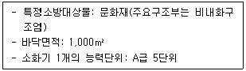
- 4개
- 5개
- 6개
- 7개
(정답률: 66%)
102. 옥내소화전설비의 화재안전기술기준상 펌프를 이용하는 가압송수장치의 설치기준에 관한 내용으로 옳지 않은 것은?
- 펌프는 전용으로 할 것(다만, 다른 소화설비와 겸용하는 경우 각각의 소화설비의 성능에 지장이 없을 때에는 그렇지 않음)
- 동결방지조치를 하거나 동결의 우려가 없는 장소에 설치할 것
- 펌프의 토출 측에는 압력계를 체크밸브 이후에 설치하고, 흡입 측에는 연성계 또는 진공계를 설치할 것
- 펌프축은 스테인리스 등 부식에 강한 재질을 사용할 것
(정답률: 73%)
103. 옥내소화전설비의 화재안전기술기준상 배관 내 사용압력이 1.2MPa 이상일 경우에 사용할 수 있는 배관으로 옳은 것은?
- 배관용 아크용접 탄소강 강관(KS D 3583)
- 배관용 스테인리스 강관(KS D 3576)
- 덕타일 주철관(KS D 4311)
- 일반배관용 스테인리스 강관(KS D 3595)
(정답률: 65%)
104. 10층 건물에 옥내소화전이 각 층에 3개씩 설치되었다. 펌프의 성능시험에서 정격토출압력이 0.8MPa 일 때 ( )에 들어갈 것으로 옳은 것은?
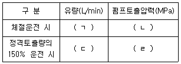
- ㄱ: 0, ㄴ: 1.2 미만
- ㄱ: 0, ㄴ: 1.2 이상
- ㄷ: 390, ㄹ: 0.52 미만
- ㄷ: 390, ㄹ: 0.52 이상
(정답률: 58%)
1⑤. 옥외소화전설비의 설치에 관한 내용으로 옳은 것은?
- 호스접결구는 지면으로부터 높이가 0.8m 이상 1.5m 이하의 위치에 설치해야 한다.
- 옥외소화전이 11개 이상 30개 이하 설치된 때에는 10개 이하의 소화전함을 각각 분산하여 설치해야 한다.
- 배관과 배관이음쇠는 배관용 스테인리스 강관(KS D 3576)의 이음을 용접으로 할 경우 텅스텐 불활성 가스 아크 용접방식에 따른다.
- 펌프의 토출 측 배관은 공기 고임이 생기지 않는 구조로 하고 여과장치를 설치해야 한다.
(정답률: 56%)
106. 스프링클러설비의 화재안전기술기준상 스프링클러헤드 수별 급수관의 구경을 산정하려고 한다. 다음 조건에 맞는 급수관의 최소 구경으로 옳은 것은?
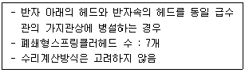
- 32mm
- 40mm
- 50mm
- 65mm
(정답률: 55%)
107. 물분무소화설비의 화재안전기술기준상 물분무헤드의 설치제외 장소로 옳지 않은 것은?
- 물에 심하게 반응하는 물질 또는 물과 반응하여 위험한 물질을 생성하는 물질을 저장 또는 취급하는 장소
- 고온의 물질 및 증류범위가 넓어 끓어 넘치는 위험이 있는 물질을 저장 또는 취급하는 장소
- 운전시에 표면의 온도가 260℃ 이상으로 되는 등 직접 분무를 하는 경우 그 부분에 손상을 입힐 우려가 있는 기계장치 등이 있는 장소
- 통신기기실·전자기기실·기타 이와 유사한 장소
(정답률: 59%)
108. 포소화설비의 화재안전기술기준상 차고에 전역방출방식의 고발포용 고정포방출구를 설치하려고 한다. 팽창비가 500인 경우 관포체적 1m3에 대하여 1분당 최소 포수용액 방출량은?
- 0.16L
- 0.18L
- 0.29L
- 0.31L
(정답률: 31%)
109. 할로겐화합물 및 불활성기체소화설비의 화재안전기술기준상 음향경보장치의 설치기준으로 옳은 것은?
- 수동식 기동장치 및 자동식 기동장치를 설치한 것은 화재감지기와 연동하여 자동으로 경보를 발하는 것으로 할 것
- 방호구역 또는 방호대상물이 있는 구획 외부에 있는 자에게 유효하게 경보할 수 있는 것으로 할 것
- 방호구역 또는 방호대상물이 있는 구획의 각 부분으로부터 하나의 확성기까지의 수평거리는 25m 이하가 되도록 할 것
- 제어반의 복구스위치를 조작할 경우 경보를 정지할 수 있는 것으로 할 것
(정답률: 49%)
110. 이산화탄소소화설비의 화재안전성능기준에 관한 내용으로 옳은 것은?
- 설계농도란 규정된 실험 조건의 화재를 소화하는데 필요한 소화약제의 농도(형식승인 대상의 소화약제는 형식승인된 소화농도)를 말한다.
- 방호구역에는 소화약제 방출 시 과압으로 인한 구조물 등의 손상을 방지하기 위하여 급기구를 설치해야 한다.
- 분사헤드는 사람이 상시 근무하거나 다수인이 출입·통행하는 곳과 자기연소성물질 또는 활성금속물질 등을 저장하는 장소에는 설치해서는 안 된다.
- 지하층, 무창층 및 밀폐된 거실 등에 방출된 소화약제를 배출하기 위한 자동폐쇄장치를 갖추어야 한다.
(정답률: 58%)
111. 다음 조건의 전기질에 불활성기체소화설비를 설치하려고 한다. 화재안전기술기준상 필요한 화재감지기의 최소 설치개수는?
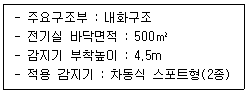
- 8개
- 15개
- 24개
- 30개
(정답률: 50%)
112. 다음 조건의 주차장에 전역방출방식의 분말소화설비를 설치하려고 한다. 화재안전기술기준상 필요한 소화약제의 최소 저장용기 수(병)는?
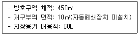
- 2
- 3
- 4
- 5
(정답률: 48%)
113. 다음 조건의 방호구역에 할로겐화합물 소화설비를 설치하려고 한다. 화재안전기술기준상 필요한 소화약제의 최소 저장용기 수(병)는?
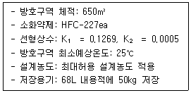
- 9
- 11
- 13
- 40
(정답률: 42%)
114. 자동화재탐지설비 및 시각경보장치의 화재안전기술기준상 다음 장소에 연기감지기를 설치해야 하는 특정소방대상물로 옳지 않은 것은?
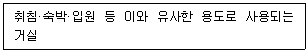
- 공동주택·오피스텔·숙박시설·위락시설
- 교육연구시설 중 합숙소
- 의료시설, 근린생활시설 중 입원실이 있는 의원·조산원
- 교정 및 군사시설
(정답률: 50%)
115. 다음은 자동화재탐지설비 및 시각경보장치의 화재안전기술기준상 청각장애인용 시각경보장치의 설치기준이다. ( )에 들어갈 것으로 옳은 것은?
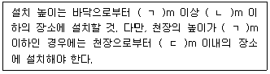
- ㄱ: 1.5, ㄴ: 2.0, ㄷ: 0.1
- ㄱ: 1.5, ㄴ: 2.0, ㄷ: 0.15
- ㄱ: 2.0, ㄴ: 2.5, ㄷ: 0.1
- ㄱ: 2.0, ㄴ: 2.5, ㄷ: 0.15
(정답률: 64%)
116. 특별피난계단의 계단실 및 부속실 제연설비의 화재안전기술기준상 다음 조건에 따른 출입문의 틈새면적(m2)은?
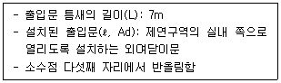
- 0.01
- 0.0125
- 0.0152
- 0.0228
(정답률: 46%)
117. 유도등 및 유도표지의 화재안전기술기준상 설치기준에 관한 내용으로 옳은 것은?
- 피난구유도등은 피난구의 바닥으로부터 높이 1.2m 이상으로서 출입구에 인접하도록 설치할 것
- 복도통로유도등은 구부러진 모퉁이를 기점으로 보행거리 25m마다 설치할 것
- 유도표지는 각 층마다 복도 및 통로의 각 부분으로부터 보행거리가 20m 이하가 되는 곳에 설치할 것
- 축광방식의 피난유도선은 바닥으로부터 높이 50cm 이하의 위치 또는 바닥 면에 설치할 것
(정답률: 53%)
118. 비상경보설비 및 단독경보형감지기의 화재안전기술기준상 단독경보형감지기 설치기준에 관한 내용으로 옳지 않은 것은?
- 각 실(이웃하는 실내의 바닥면적이 각각 30m2 미만이고 벽체의 상부의 전부 또는 일부가 개방되어 이웃하는 실내와 공기가 상호 유통되는 경우에는 이를 1개의 실로 본다)마다 설치하되 바닥면적이 150m2를 초과하는 경우에는 150m2 마다 1개 이상 설치할 것
- 계단실은 최상층의 계단실 천장(외기가 상통하는 계단실의 경우를 포함한다)에 설치할 것
- 건전지를 주전원으로 사용하는 단독경보형감지기는 정상적인 작동상태를 유지할 수 있도록 주기적으로 건전지를 교환할 것
- 상용전원을 주전원으로 사용하는 단독경보형감지기의 2차전지는 「소방시설 설치 및 관리에 관한 법률」 제40조에 따라 제품검사에 합격한 것을 사용할 것
(정답률: 57%)
119. 연결송수관설비의 화재안전기술기준상 방수구는 특정소방대상물의 층마다 설치해야한다. 방수구 설치를 제외할 수 있는 것으로 옳지 않은 것은?
- 아파트의 1층 및 2층
- 소방차의 접근이 가능하고 소방대원이 소방차로부터 각 부분에 쉽게 도달할 수 있는 피난층
- 송수구가 부설된 옥내소화전을 설치한 특정소방대상물(집회장·관람장·백화점·도매시장·소매시장·판매시설·공장·창고시설 또는 지하가를 제외한다)로서 지하층을 제외한 층수가 5층 이하이고 연면적이 6,000 m2 이하인 특정소방대상물의 지상층
- 송수구가 부설된 옥내소화전을 설치한 특정소방대상물(집회장·관람장·백화점·도매시장·소매시장·판매시설·공장·창고시설 또는 지하가를 제외한다)로서 지하층의 층수가 2 이하인 특정소방대상물의 지하층
(정답률: 60%)
120. 고층건축물의 화재안전기술기준상 피난안전구역에 설치하는 소방시설의 설치기준에 관한 내용으로 옳은 것은?
- 제연설비의 피난안전구역과 비 제연구역간의 차압은 40Pa(옥내소화전설비가 설치된 경우에는 12.5 Pa) 이상으로 해야 한다.
- 피난유도선의 피난유도 표시부 너비는 최소 25mm 이상으로 설치할 것
- 비상조명등은 각 부분의 바닥에서 조도는 11x 이상이 될 수 있도록 설치할 것
- 인명구조기구 중 방열복, 인공소생기를 각 1개 이상 비치할 것
(정답률: 42%)
121. 소화수조 및 저수조의 화재안전기술기준상 설치기준에 관한 내용으로 옳지 않은 것은?
- 소화수조 및 저수조의 채수구 또는 흡수관투입구는 소방차가 5m 이내의 지점까지 접근할 수 있는 위치에 설치해야 한다.
- 1층 및 2층의 바닥면적의 합계가 15,000m2 이상인 특정소방대상물은 7,500m2로 나누어 얻은 수(소수점이하의 수는 1로 본다)에 20m3를 곱한 양 이상이 되도록 해야 한다.
- 채수구의 수는 소요수량이 100m3 이상인 경우 3개 이상 설치해야 한다.
- 소화수조 또는 저수조가 지표면으로부터의 깊이(수조 내부바닥까지의 길이를 말한다)가 4.5m 이상인 지하에 있는 경우에는 가압송수장치를 설치해야 한다.
(정답률: 51%)
122. 화재안전기술기준에서 정하는 방화구획 등의 설치기준에 관한 내용으로 옳지 않은 것은?
- 지하구 방화벽의 출입문은 「건축법 시행령」 제64조에 따른 방화문으로서 60분+ 방화문 또는 60분 방화문으로 설치할 것
- 소방시설용 비상전원수전설비를 고압으로 수전하는 경우 방화구획 하지 않을 수 있다.
- 전기저장장치 설치장소의 벽체, 바닥 및 천장은 「건축물의 피난·방화구조 등의 기준에 관한 규칙」에 따라 건축물의 다른 부분과 방화구획 해야 한다. 다만, 배터리실 외의 장소와 옥외형 전기저장장치 설비는 방화구획 하지 않을 수 있다.
- 제연설비 비상전원의 설치장소는 다른 장소와 방화구획할 것
(정답률: 62%)
123. 가스누설경보기의 화재안전기술기준상 일산화탄소 경보기 중 단독형 경보기 설치기준으로 옳은 것을 모두 고른 것은?
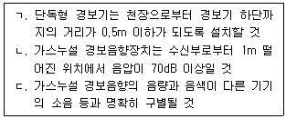
- ㄱ, ㄴ
- ㄱ, ㄷ
- ㄴ, ㄷ
- ㄱ, ㄴ, ㄷ
(정답률: 48%)
124. 무선통신보조설비의 화재안전기술기준상 설치기준으로 옳지 않은 것은?
- 증폭기에는 비상전원이 부착된 것으로 하고 해당 비상전원 용량은 무선통신보조설비를 유효하게 20분 이상 작동시킬 수 있는 것으로 할 것
- 수신기가 설치된 장소 등 사람이 상시 근무하는 장소에는 옥외안테나의 위치가 모두 표시된 옥외안테나 위치표시도를 비치할 것
- 분배기·분파기 및 혼합기 등의 임피던스는 50Ω의 것으로 할 것
- 누설동축케이블 및 동축케이블의 임피던스는 50Ω으로 하고, 이에 접속하는 안테나·분배기 기타의 장치는 해당 임피던스에 적합한 것으로 할 것
(정답률: 55%)
125. 다음은 비상콘센트설비의 화재안전기술기준상 전원의 설치기준이다. ( )에 들어갈 것으로 옳은 것은?
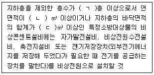
- ㄱ: 5, ㄴ: 1,000, ㄷ: 2,000
- ㄱ: 5, ㄴ: 2,000, ㄷ: 3,000
- ㄱ: 7, ㄴ: 1,000, ㄷ: 2,000
- ㄱ: 7, ㄴ: 2,000, ㄷ: 3,000
(정답률: 54%)